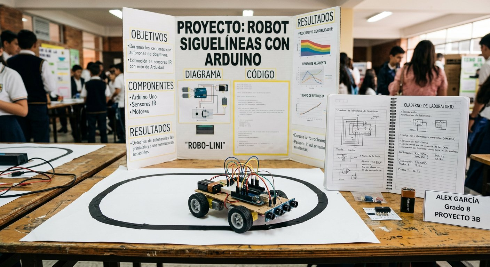

Qué cubre esta guía
- Cómo elegir el proyecto correcto
- Los 12 proyectos, de un vistazo
- Proyectos de nivel inicial (1–4)
- Proyectos de nivel intermedio (5–8)
- Proyectos de nivel avanzado (9–12)
- El método científico aplicado a la robótica
- Ejemplo de código: siguelíneas con control proporcional
- Cómo presentar y qué buscan los jueces
- Preguntas frecuentes
Cómo elegir el proyecto correcto
El proyecto ganador no es el más caro ni el más complicado, sino el que cruza tres criterios. Evalúa cada idea contra ellos antes de decidir:
- Interés genuino: un tema que al estudiante le importe de verdad se defiende con pasión ante los jueces y se sostiene durante las semanas de trabajo.
- Factibilidad: materiales disponibles localmente, presupuesto alcanzable y tiempo suficiente para construir, probar y repetir.
- Contenido científico medible: una variable independiente que se pueda modificar y una dependiente que se pueda medir. Sin medición no hay ciencia, solo una demostración.
Los 12 proyectos, de un vistazo
| # | Proyecto | Nivel | Concepto científico central | Guía relacionada |
|---|---|---|---|---|
| 1 | Semáforo inteligente | Inicial | Ley de Ohm y máquina de estados | Semáforo con LEDs |
| 2 | Piano electrónico | Inicial | Frecuencia y ondas sonoras | Piano con buzzer |
| 3 | Brazo robótico con servos | Inicial | Ángulos, palancas y control de posición | — |
| 4 | Detector de metales | Inicial | Inducción electromagnética | Detector de metales casero |
| 5 | Siguelíneas | Intermedio | Reflexión de luz infrarroja y control proporcional | — |
| 6 | Robot evasor de obstáculos | Intermedio | Ultrasonido y tiempo de vuelo | Radar ultrasónico |
| 7 | Estación meteorológica | Intermedio | Temperatura, humedad y registro de datos | Estación meteorológica |
| 8 | Invernadero automatizado | Intermedio | Humedad de suelo y control automático | — |
| 9 | Radar ultrasónico con Processing | Avanzado | Eco de ultrasonido y visualización de datos | Radar ultrasónico |
| 10 | Coche controlado por Bluetooth | Avanzado | Comunicación inalámbrica y control remoto | Arduino por Bluetooth |
| 11 | Clasificador por color | Avanzado | Detección de color RGB y automatización | — |
| 12 | Mano robótica | Avanzado | Biomecánica, servos y control de dedos | — |
Proyectos de nivel inicial (1–4)
1. Semáforo inteligente
Tres LEDs, tres resistencias y un Arduino: el proyecto perfecto para demostrar la Ley de Ohm (cálculo de la resistencia limitadora) y el patrón de máquina de estados. Variable medible: la duración de cada fase frente al flujo simulado. Toda la construcción está en la guía técnica del semáforo.
2. Piano electrónico
Botones que disparan notas de un buzzer. El concepto central es la frecuencia: cada nota corresponde a una frecuencia de oscilación distinta, y se puede medir cómo cambia el tono al modificar el valor. La guía completa está en Piano Electrónico con Botones y Buzzer.
3. Brazo robótico con servos
Una estructura de cartón, madera o impresión 3D movida por dos o tres servos. Demuestra ángulos, palancas y control de posición: la variable medible es la precisión del brazo para posicionarse en un punto dado según el ángulo programado de cada servo.
4. Detector de metales
Una bobina y un Arduino detectan la presencia de metal por inducción electromagnética. Variable medible: la distancia de detección según el tipo de metal (ferroso frente a no ferroso). Sigue la guía del detector de metales casero.
Proyectos de nivel intermedio (5–8)
5. Siguelíneas
Un robot que sigue una línea negra usando sensores infrarrojos que miden la reflexión de la luz. Es el proyecto estrella para aplicar el método científico: la variable independiente es la velocidad máxima, y la dependiente, el número de salidas de pista. El código de ejemplo está más abajo en esta guía.
6. Robot evasor de obstáculos
Un robot móvil que usa un sensor ultrasónico para medir distancias y esquivar objetos, aplicando el tiempo de vuelo del sonido. Variable medible: la distancia mínima de reacción frente a la velocidad del robot.
7. Estación meteorológica
Sensor de temperatura y humedad más pantalla OLED para registrar y mostrar datos. El valor científico está en el registro de datos a lo largo del tiempo y su comparación con una estación de referencia. Guía completa en Estación Meteorológica con Arduino.
8. Invernadero automatizado
Un sensor de humedad de suelo activa una bomba o válvula de riego cuando la tierra se seca. Demuestra control automático de lazo cerrado: el sistema mide, compara y actúa. Variable medible: el umbral de humedad que dispara el riego frente al consumo de agua.
Proyectos de nivel avanzado (9–12)
9. Radar ultrasónico con Processing
Un servo barre 180° mientras el sensor ultrasónico mide distancias y Processing dibuja un mapa tipo radar en pantalla. Combina eco de ultrasonido y visualización de datos en tiempo real. Guía completa en Radar con Sensor Ultrasónico y Processing.
10. Coche controlado por Bluetooth
Un vehículo de dos motores se controla desde el celular con el módulo HC-05. El concepto central es la comunicación inalámbrica serial. Guía completa en Controla tu Arduino por Bluetooth.
11. Clasificador por color
Un sensor de color RGB detecta el color de un objeto y un mecanismo lo desvía a un contenedor. Aplica detección de color por reflexión de luz y automatización. Variable medible: la precisión de clasificación frente a la velocidad de la cinta.
12. Mano robótica
Una mano articulada cuyos dedos se mueven con servos, controlada por guantes con sensores o por botones. Combina biomecánica y control de posición. Variable medible: la fuerza o el rango de agarre según la posición programada de cada dedo.
El método científico aplicado a la robótica
Convertir una demostración en un proyecto científico requiere aplicar el método con rigor. La secuencia es la misma que en cualquier laboratorio, adaptada al hardware:
- Pregunta: formula una pregunta específica y medible. Ejemplo: "¿cómo afecta la velocidad máxima al número de veces que el siguelíneas pierde la línea?"
- Hipótesis: predice la relación entre variables. Ejemplo: "a mayor velocidad, más salidas de pista, porque el sensor tiene menos tiempo para reaccionar".
- Variables: identifica la independiente (velocidad), la dependiente (salidas de pista) y las controladas (misma pista, misma iluminación, misma batería).
- Experimentación: repite cada condición al menos 3 veces y registra los resultados en una tabla.
- Análisis: calcula promedios y grafica los datos; observa la tendencia.
- Conclusión: responde a la pregunta con los datos, aceptando o rechazando la hipótesis.
Ejemplo de código: siguelíneas con control proporcional
El siguelíneas simple usa lógica de "si veo negro, giro; si no, avanzo". Una versión más elegante y premiada usa control proporcional: la corrección del giro es proporcional a cuán lejos está el robot del centro de la línea, lo que produce un movimiento suave en lugar de zigzagueos bruscos.
// Siguelineas con control proporcional simplificado
const int SENSOR_IZQ = A0; // sensor izquierdo
const int SENSOR_DER = A1; // sensor derecho
const int MOTOR_IZQ_VEL = 5; // pin PWM velocidad motor izquierdo
const int MOTOR_DER_VEL = 6; // pin PWM velocidad motor derecho
const int VEL_BASE = 150; // velocidad base (0-255)
const float KP = 0.5; // ganancia proporcional
void setup() {
pinMode(MOTOR_IZQ_VEL, OUTPUT);
pinMode(MOTOR_DER_VEL, OUTPUT);
}
void loop() {
int lecturaIzq = analogRead(SENSOR_IZQ);
int lecturaDer = analogRead(SENSOR_DER);
// Error: diferencia entre ambos sensores (0 = centrado)
int error = lecturaIzq - lecturaDer;
// Correccion proporcional al error
int correccion = (int)(KP * error);
// Ajusta la velocidad de cada rueda
int velIzq = VEL_BASE - correccion;
int velDer = VEL_BASE + correccion;
// Limita los valores al rango permitido
velIzq = constrain(velIzq, -255, 255);
velDer = constrain(velDer, -255, 255);
analogWrite(MOTOR_IZQ_VEL, abs(velIzq));
analogWrite(MOTOR_DER_VEL, abs(velDer));
}Para el proyecto de feria, la variable independiente (la velocidad base VEL_BASE) se modifica entre pruebas mientras se registra la variable dependiente (salidas de pista en una pista de longitud fija). Ese experimento, con su tabla y su gráfico, es exactamente el tipo de análisis que los jueces buscan.
Cómo presentar y qué buscan los jueces
La presentación pesa tanto como el proyecto. Los jueces evalúan cuatro dimensiones, y conviene preparar cada una por separado:
| Dimensión | Qué buscan | Cómo prepararse |
|---|---|---|
| Problema y pregunta | Claridad y relevancia de la pregunta de investigación | Enunciar la pregunta en una frase y repetirla al inicio de la presentación |
| Proceso y rigor | Bitácora, repeticiones, control de variables | Llevar la bitácora física y las tablas de datos con promedios y gráficos |
| Comprensión real | Explicar código y circuito, responder por qué | Ensaya explicar cada línea del código y cada conexión; anticipa preguntas |
| Comunicación | Poster claro y demostración en vivo | Poster con título, pregunta, hipótesis, método, resultados y conclusión; demo ensayada con plan B |
Conclusión
Una feria científica es la oportunidad perfecta para que un proyecto de robótica se transforme en ciencia de verdad: con pregunta, hipótesis, mediciones y conclusión. Elige el proyecto por interés y factibilidad, aplica el método científico con rigor, documenta todo en la bitácora y prepara una presentación que demuestre comprensión real. Si tu equipo va un paso más allá y quiere competir formalmente, la siguiente lectura es la guía para preparar a tu equipo para competencias de robótica escolar.
Preguntas frecuentes
¿Cómo elijo el proyecto correcto para mi feria científica?
Elige un proyecto que cruce tres criterios: interés genuino del estudiante (un tema que realmente le importe se defiende mejor ante los jueces), factibilidad (que los materiales estén disponibles y el tiempo alcance para terminar y probar varias veces) y contenido científico medible (que tenga una variable que se pueda cambiar y medir). Evita proyectos que dependan de una sola prueba o de componentes difíciles de conseguir; la consistencia y la repetición valen más ante los jueces que la espectacularidad de un prototipo que funciona a medias.
¿Qué nivel de dificultad es adecuado para mi curso?
Para educación básica conviene elegir proyectos de la categoría inicial: semáforo, piano electrónico, brazo robótico con servos o detector de metales, que combinan electrónica simple con resultados visuales inmediatos. Para enseñanza media, los proyectos intermedios y avanzados como el siguelíneas con control proporcional, el radar ultrasónico o el coche Bluetooth permiten incorporar variables medibles, gráficos de datos y análisis más sofisticado, que son justamente lo que distingue a los proyectos ganadores. La regla es simple: mejor un proyecto más sencillo pero impecable y bien documentado que uno ambicioso a medio terminar.
¿Cómo aplico el método científico a un proyecto de robótica?
El método científico se aplica definiendo una pregunta clara y una variable que puedas modificar y medir. Por ejemplo, en un siguelíneas la pregunta podría ser "¿cómo afecta la velocidad máxima al número de veces que el robot pierde la línea?" y la variable independiente sería la velocidad programada, mientras la dependiente sería el conteo de salidas de pista. Registra los datos de varias repeticiones en una tabla, calcula promedios, grafica los resultados y concluye respondiendo a la pregunta inicial. La clave para los jueces es mostrar que hubo medición y repetición, no solo un robot que funciona.
¿Qué buscan los jueces en un proyecto de feria científica de robótica?
Los jueces suelen evaluar cuatro dimensiones: la claridad del problema y la pregunta de investigación, el rigor del proceso (bitácora, repeticiones, registro de datos y control de variables), la comprensión real del funcionamiento (que el estudiante pueda explicar el código y el circuito, y responder preguntas sobre por qué hizo cada elección) y la calidad de la comunicación (poster, demostración en vivo y respuestas orales). Un proyecto modesto pero que el estudiante entiende a fondo y puede defender supera siempre a uno sofisticado construido por un adulto.
¿Cuánto tiempo necesito para terminar un proyecto de feria científica?
Planifica al menos 4 a 6 semanas para un proyecto intermedio, distribuyendo el tiempo en fases: una semana de definición del problema e investigación, dos semanas de construcción y programación iterativa, una semana de medición y registro de datos con repeticiones, y una semana final de preparación del poster y ensayo de la presentación. El error más común es dejar todo para la última semana; los proyectos ganadores se distinguen porque tuvieron tiempo de fallar, corregir y repetir las mediciones, y esa iteración es exactamente lo que documenta la bitácora.
Este artículo es contenido editorial independiente: no contiene ubicaciones patrocinadas ni enlaces de afiliado. Si en futuras actualizaciones se agregan enlaces a proveedores de componentes, serán identificados explícitamente. El código es referencial y debe adaptarse y probarse con tu propio hardware. Si detectas un error en esta guía, por favor avísanos.
Sigue aprendiendo
La mayoría de estos proyectos ya tienen guía completa en este sitio: empieza por el semáforo, el radar ultrasónico o la estación meteorológica.
¿El siguiente paso es una competencia formal? Revisa Cómo Preparar a tu Equipo para Competencias de Robótica Escolar.
Fuentes primarias y lecturas recomendadas
Referencias que sustentan los conceptos científicos mencionados; los detalles de construcción están en las guías enlazadas de este sitio.
- Arduino Reference — Funciones de control y sensores
- Programa Explora — Ferias y congresos de ciencia escolar en Chile
- All About Circuits — Referencia técnica de la Ley de Ohm
Enlaces revisados: 13 de agosto de 2026.